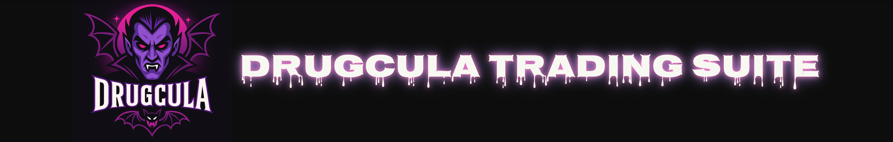

ISIRILMA! - ISIR...

DrugCula’ya Hoş Geldiniz — En gizli, çok cüzdanlı ve akıllı alım-satım motoru ile meme coin piyasalarını avucunuzun içine alın.
🧩 Temel Özellikler
- Ana → Hayalet → Bot → Ayna şeklinde çok katmanlı cüzdan yapısı
- A–D gruplarında özelleştirilmiş alım/satım stratejileri
- Seçilen veya tanınmış cüzdanlardan gerçek zamanlı işlem aynalama
- Bubble Map’ten gizlenmek için stealth (gizli) mod
- Tek tıklama ile fon aktarımı ve toplu çekim işlemleri
- VPS üzerinden çalışan 7/24 arka plan işlemci + Telegram bildirimleri
🚀 Nasıl Çalışır?
- Cüzdanları oluşturun ve Phantom’dan SOL aktarın
- Token adresini kilitleyin
- Grupları başlatın, alım satımları tetikleyin, lider cüzdanları belirleyin
- DrugCula'yı manuel veya otomatik modda çalıştırın
📈 Beklenen Kazanç / ROI
Stratejiye, zamanlamaya ve token davranışına göre işlem başına 1.5x ile 5x+ kazanç mümkün.
DrugCula’nın çok katmanlı sistemi ve ayna takibi sayesinde erken alım ve güvenli çıkış sağlanabilir.
🔒 Güvenlik
- Gizli anahtarlar yalnızca yerel olarak veya sunucuda şifreli olarak saklanır
- Cüzdanlar dışa aktarılabilir, yedeklenebilir ve yeniden yüklenebilir
- Whitelist sayesinde kendi cüzdanlarınızı koruyabilirsiniz
📬 Telegram Uyarıları
Çekim, hata, aynalama ve fon hareketlerinde anında Telegram bildirimi alın. Bot token ve chat ID bilgilerini config.json dosyanıza ekleyin.
🧠 Sunucu Otomasyonu
- VPS üzerinde Node.js ile çalışan arka plan botu
- Log kayıtları REST endpoint’e ve Telegram’a gönderilir
- Tarayıcıdan izlenebilecek log arayüzü (dashboard)
💥 Pump.fun Sistemi Nasıl Çalışır?
Pump.fun, Solana ağı üzerinde herhangi biri tarafından akıllı sözleşme kodu yazmadan yeni meme coin token'ları başlatılmasına izin veren bir platformdur. Sistem, bonding curve (bağ eğrisi) adı verilen otomatik fiyatlandırma mantığıyla çalışır.
🚦 Aşamalar ve Mekanik
- Creation: Token sayfası Pump.fun üzerinde oluşturulur, ama henüz satın alınmamıştır. Token teknik olarak zincirde yoktur.
- Bonding Curve Phase: İlk alımdan sonra aktifleşir. Her yeni alıcı, önceki alıcıya göre daha pahalı alım yapar. Fiyat, her alımla birlikte artar.
- Soaring: ~10+ alıcıdan sonra momentum artar. Sosyal medya ilgisi başlar. Token’ın fiyatı ivmelenir.
- Raydium Injection: Pump.fun yaklaşık 1.2 SOL toplandığında:
- 1 SOL + tokenların %50’si Raydium'a enjekte edilir (likidite havuzu kurulumu)
- Kalan ~0.2 SOL platform ücreti olarak alınır
- Completed: Token Pump.fun üzerinden alım-satıma kapatılır. Artık tamamen Raydium veya diğer DEX’ler üzerinden işlem görür.
📌 Örnek: Enjeksiyon Senaryosu
- $LOL isimli token başlatıldı.
- İlk 15 cüzdan yaklaşık 1.25 SOL toplam alım yaptı.
- Pump.fun:
- 1 SOL + 500,000 token’ı Raydium’a gönderdi
- Token’ı on-chain olarak yayınladı
- 0.25 SOL’ü platform kârı olarak aldı
💡 DrugCula Stratejisi ile Etkileşimi
- Grup A/B: En erken alımcı olur, Injection'dan önce satar.
- Grup C: Injection’a yakın alım yapar, fiyat sıçraması ile satış planlar.
- Grup D: Raydium’daki MarketCap’e göre satışı tetikler.
- Mirror Botlar: Injection öncesi aktif, sonrası genelde pasif kalır.
📈 Zamanlama Neden Kritik?
| Alıcı Sırası | Fiyat (SOL) | Olası ROI |
|---|
| 1. | 0.0004 | 100x |
| 3. | 0.002 | 20x |
| 10. | 0.015 | 6x |
| 20. | 0.04 | 2.5x |
Erken olmak her şeydir. DrugCula grupları, injection’dan önceki 5–15 alım sırasına yerleşecek şekilde optimize edilmiştir.